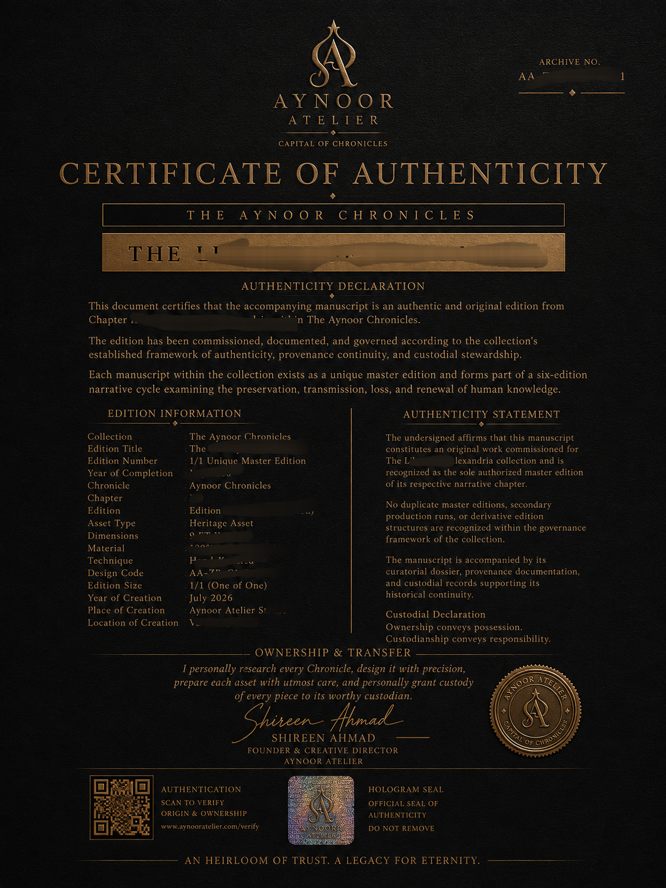
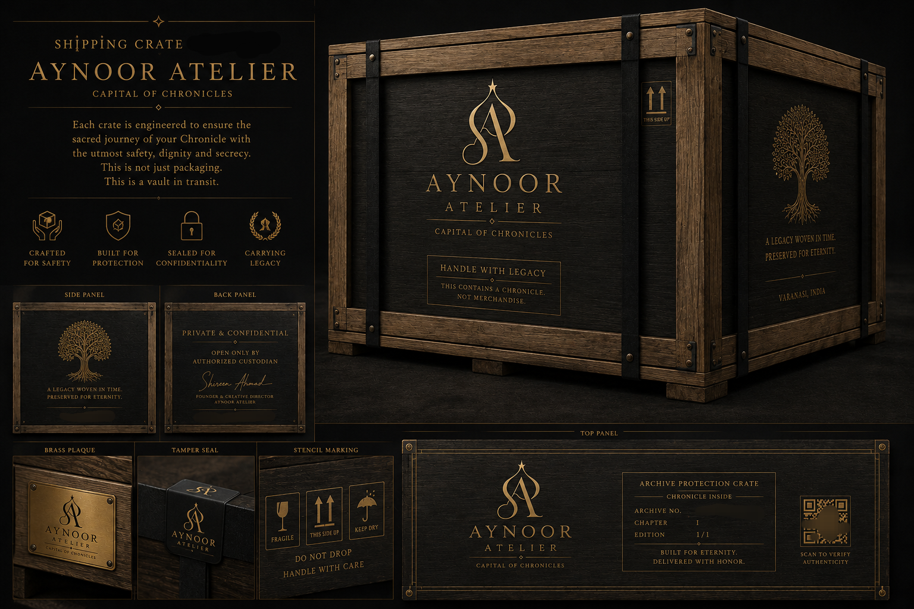
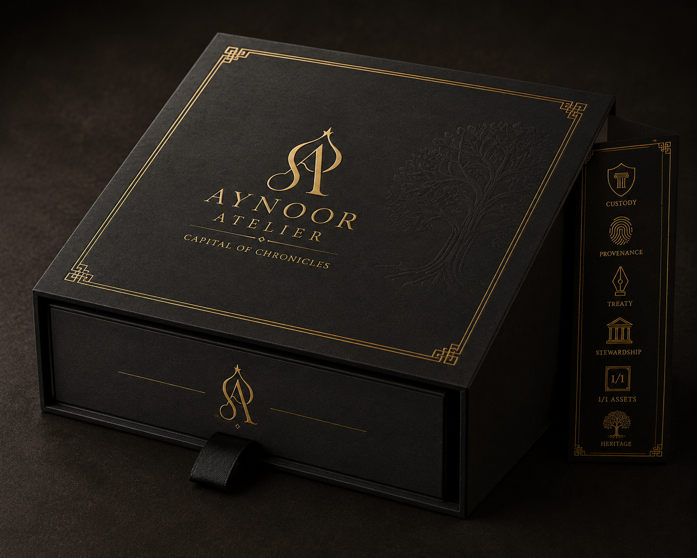
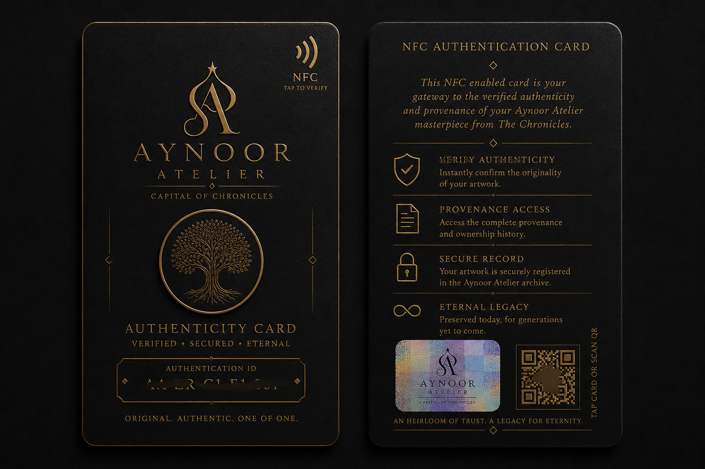
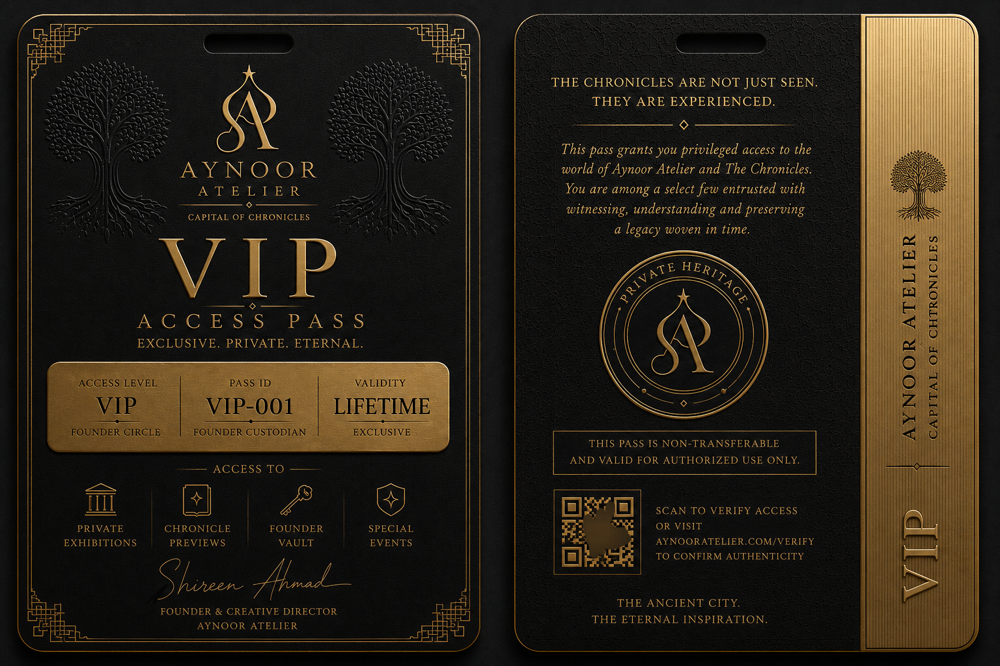
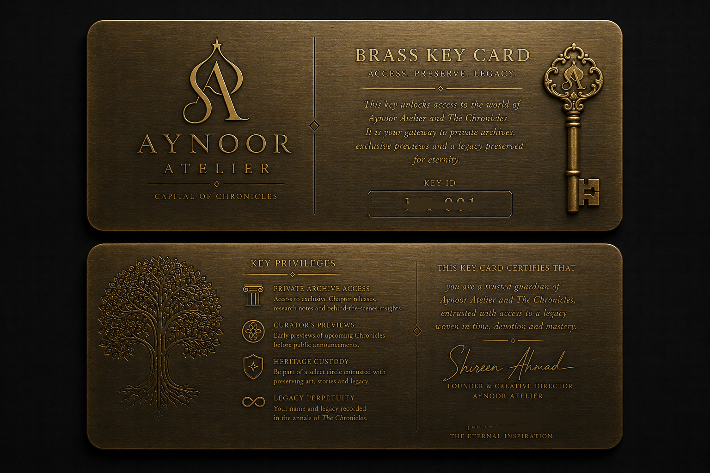
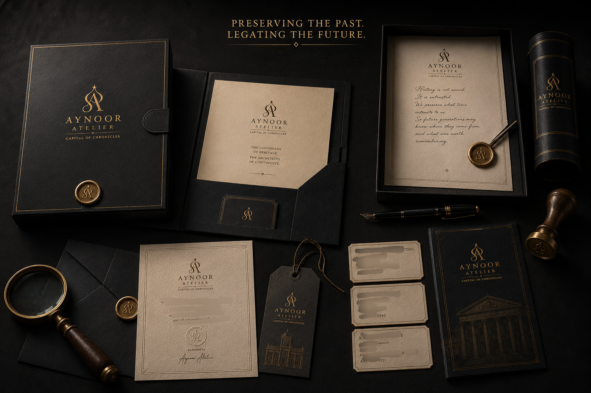
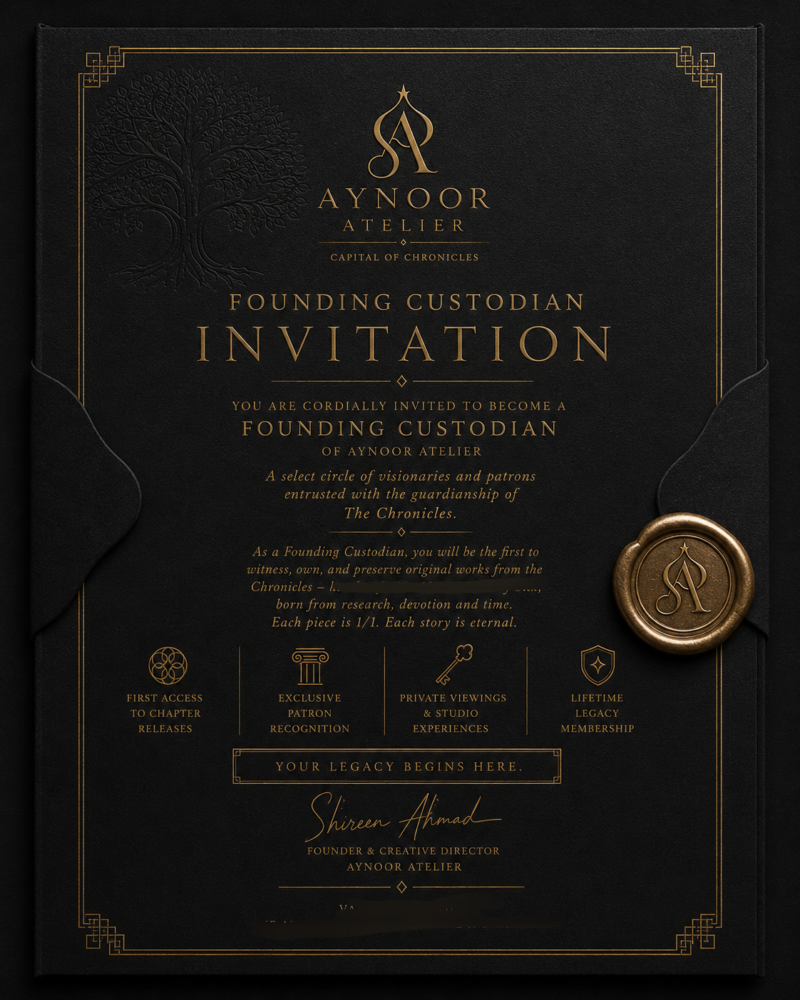

The Manuscript of Aynoor Atelier
VOLUME V
The Archive
An institutional record of objects, documents and custodial materials.
The Archive preserves the visual identity of Aynoor Atelier. Each object displayed within this collection represents a documented component of our custodial institution and contributes to its historical continuity.

Certificate of Authenticity
The Certificate of Authenticity serves as the official institutional verification of a Chronicle prepared and authenticated by Aynoor Atelier. Each certificate accompanies its respective asset as a permanent record of identity, custodianship and institutional recognition.
Archive Record
Classification Certificate
Collection Aynoor Atelier
Status Institutional Archive
Reference AA-AR-001

Shipping Crate
Every Chronicle deserves secure passage. Our transport crates are prepared to protect institutional assets during movement while maintaining the dignity expected of cultural objects.
Archive Record
Classification Shipping Equipment
Collection Aynoor Atelier
Status Institutional Archive
Reference AA-AR-002

Archive Box
Prepared for the long-term preservation of documents, manuscripts and institutional records, each archive box safeguards the memory of Aynoor Atelier for future generations.
Archive Record
Classification Preservation Storage
Collection Aynoor Atelier
Status Institutional Archive
Reference AA-AR-003
Membership Card
Issued to recognized collectors and custodians, the Membership Card represents an individual's continuing association with Aynoor Atelier and its institutional journey.
Archive Record
Classification Identity Card
Collection Aynoor Atelier
Status Institutional Archive
Reference AA-AR-004

NFC Identity Card
A modern institutional credential providing secure identification and digital interaction between the custodian and the archive.
Archive Record
Classification Digital Identity
Collection Aynoor Atelier
Status Institutional Archive
Reference AA-AR-005

VIP Access Card
Reserved for distinguished guests and special custodians, the VIP Access Card symbolizes privileged participation in selected institutional experiences.
Archive Record
Classification Access Credential
Collection Aynoor Atelier
Status Institutional Archive
Reference AA-AR-006

Brass Key Card
A symbolic key representing trusted access to the custodial world of Aynoor Atelier. It reflects responsibility, continuity and the privilege of stewardship.
Archive Record
Classification Symbolic Credential
Collection Aynoor Atelier
Status Institutional Archive
Reference AA-AR-007

Asset Brass Tag
Each brass tag identifies an institutional asset through a permanent archival reference, reinforcing provenance and long-term documentation.
Archive Record
Classification Identification Tag
Collection Aynoor Atelier
Status Institutional Archive
Reference AA-AR-008
Private Treaty Agreement
The official cover of the Private Treaty Agreement establishing the custodial relationship between Aynoor Atelier and its collectors. The complete agreement remains private and is shared only with the respective custodian.
Archive Record
Classification Institutional Agreement
Collection Aynoor Atelier
Status Restricted Record
Reference AA-AR-009

Institutional Artifacts
Presentation folders, archival stationery, museum labels, ceremonial objects and future institutional materials preserving the evolving identity of Aynoor Atelier.
Archive Record
Classification Institutional Collection
Collection Aynoor Atelier
Status Active Archive
Reference AA-AR-010

Founding Custodian Invitation
Reserved exclusively for those who became custodians during the founding era of Aynoor Atelier, commemorating their place within the institution's earliest history.
Archive Record
Classification Founding Invitation
Collection Aynoor Atelier
Status Limited Edition
Reference AA-AR-011